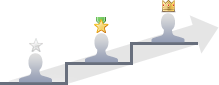

|
홈페이지샵 / 무료몰+ : 회원 등급(그룹)은 ‘4단계’까지 가능합니다. 회원 등급이 5단계 이상인 쇼핑몰을 운영하시려면 프리미엄몰+ 또는 독립몰+로 업그레이드 하시길 바랍니다. |
 |
|
홈페이지샵 / 무료몰+ : 회원 등급(그룹)은 ‘4단계’까지 가능합니다. 회원 등급이 5단계 이상인 쇼핑몰을 운영하시려면 프리미엄몰+ 또는 독립몰+로 업그레이드 하시길 바랍니다. |
|
|  | 쇼핑몰의 우수고객 제도(또는 회원 등급 정책)는 구매실적(구매금액,구매건수,구매횟수)을 종합하여
회원의 기여도에 따라 회원등급을 나누고 해당 회원등급에게 혜택을 드리는 제도입니다.
우수고객제도로 구매전환율, 재구매율, 재방문율을 높일 수 있으며, 충성고객을 확보하시게 됩니다
쇼핑몰 운영자께서는 아래에서 회원등급을 나누는 기준과 혜택을 명확하게 결정하실 수 있습니다. |
| 자동관리 | 등급 | 선정기준 | 현재통계 | 생성일시 | 관리 | ||||||
|---|---|---|---|---|---|---|---|---|---|---|---|
| 총 구매금액 | 상품구매개수 | 주문횟수 | |||||||||
| {? .use_type=='AUTO' || .use_type=='AUTOPART'}{ : }{ / } | {?.icon} |
{? .use_type=='AUTO' || .use_type=='AUTOPART' }
{=number_format(.order_sum_price)}원 이상 | {=number_format(.order_sum_ea)}건 이상 | {=number_format(.order_sum_cnt)}회 이상 | { : }{? .group_seq==1 }신규가입 시{ : }수동으로 관리되는 등급{ / } | { / }{=number_format(.count)}명 ({?.count}{=round(.count/tot*100,2)}{:}0{/}%) | {.regist_date} | ||||
| 등급 조정(갱신)일 | 산출 기간 | 등급 유지 보장기간 | |||
|---|---|---|---|---|---|
|
등급 기준 월은 {?clone.start_month}{clone.start_month}{:}?{/}월이며,
{?clone.chg_term}{clone.chg_term}{:}?{/}개월마다 해당 월 {?clone.chg_day}{clone.chg_day}{:}?{/}일에
|
최근(직전) {?clone.chk_term}{clone.chk_term}{:}?{/}개월간의 선정 기준(구매금액, 구매건수, 구매횟수)을 회원마다 계산 |
등급 조정일부터 {?clone.keep_term}{clone.keep_term}{:}?{/}개월간의 등급 유지 | |||
| {result.chg_text} | 새벽 2시에 | {result.chk_text} | 사이의 선정기준 계산 | {result.keep_text} | 동안 유지 |